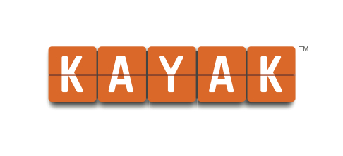
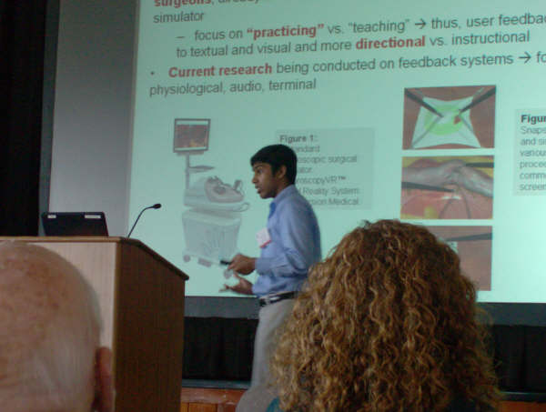
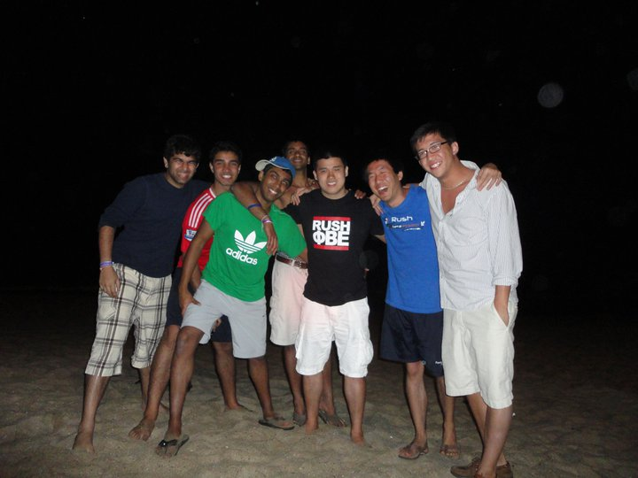
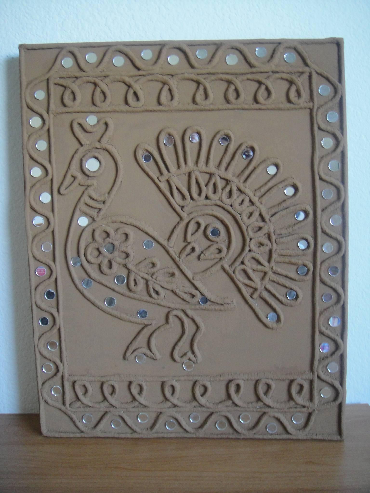

Hi,
I'm Dhruv. I'm currently a software engineer at Twitter and an MIT alum. I like to build things that make my life better and I have realized that, for me, writing code is the most resourceful way to do that. I like to believe the world has no rules, and the only rules are the personal values you choose to live by. For me, these are giving 110% to whatever I do, helping people whenever I can, being open to new, potentially unconventional, things, and trying to live in the present!
Projects Things that I have made, am making, and want to make.
Anomaly Analysis at Google (Youtube) May 2011 - Aug 2011
 Google's Mountain View campus is like its own city. It is a pretty amazing place to work. You could probably also live there. I worked in the YouTube organization and my project involved finding anomalies in YouTube's incoming firehose of data. Every day YouTube partner managers look at a complicated dashboard of charts and figures which simply summarize and prettify the data YouTube collects about its partners' videos. Their lives would be easier if computers could figure out the notable attributes about incoming data (anomalies like "ad revenue was abnormally low today") and surface the same. I designed an unsupervised clustering algorithm which found these notable attributes (learn about it on Quora). The more challenging part was integrating this service on top of Google's data storage infrastructure. It was important to design the pieces in a way where engineers could extend it and employ it within any team facing a similar need, not just YouTube. I was excited to push my code, which achieved those goals, to production in the final days of my internship!
Google's Mountain View campus is like its own city. It is a pretty amazing place to work. You could probably also live there. I worked in the YouTube organization and my project involved finding anomalies in YouTube's incoming firehose of data. Every day YouTube partner managers look at a complicated dashboard of charts and figures which simply summarize and prettify the data YouTube collects about its partners' videos. Their lives would be easier if computers could figure out the notable attributes about incoming data (anomalies like "ad revenue was abnormally low today") and surface the same. I designed an unsupervised clustering algorithm which found these notable attributes (learn about it on Quora). The more challenging part was integrating this service on top of Google's data storage infrastructure. It was important to design the pieces in a way where engineers could extend it and employ it within any team facing a similar need, not just YouTube. I was excited to push my code, which achieved those goals, to production in the final days of my internship!
Mobile Analytics at Kayak Jan 2011 - Feb 2011
I did an externship (basically a 1 month internship) at Kayak during MIT's Independent Activities Period (IAP). It was in the Kayak Mobile team and my goal was to analyze all the logs Kayak collected and find interesting patterns/trends. I'd never done analytics-type stuff before, so this served as a good intro. My first week on the job, I wrote a Hive query (a SQL-like query which runs a MapReduce job in the back) which ate up all the CPU, preventing anyone else from running their queries. I guess that was one way to get noticed ;) Tricks to make SQL queries efficient is something I learned at Kayak. I also setup a dashboard using Python/Django for the front-end, so that useful data could be parsed and analyzed automatically using cron + Hive + Hadoop, and anyone could visualize the results using the dashboard. Unfortunately, I can't share the interesting patterns I found, but I was amazed by how insightful and ultimately useful data analysis can be.
Building a Pokerbot Jan 2011 - Feb 2011
MIT has this one month period in January where students can do whatever they want. Someone was organizing a pokerbot tournament that month and me and my roommate wanted to participate. Not only that, we also wanted to win, bad! The monetary prize was quite substantial and it was our sole motivator, being poor college students. Also, my roommate was extremely good at math (he made USAMO every single year in high school). And I could code and grew up playing poker, so we thought we had a great team. We read a lot of poker literature and came up with a complex model which would maximize our chances of winning under different scenarios. Since we started off making it so complex, our code was never "quite ready" for us to participate in the mini-tournaments leading up the big one. Moreover, the complexity meant more time debugging and more time optimizing (we had to make a move in < 1 second). In the interest of time, I saw myself patching problems with if/else statements instead of figuring out what the actual logical flaw was. This just ended up creating a huge mess. Our bot ended up performing in the middle of the pack, which was disappointing. I learned few very important lessons from this experience: 1) Keep things simple (at least in the start), 2) Comment along the way rather than at the end, 3) Exhaustively test whether adding some new idea actually improves the pokerbot (by simulating a 1000 hands). If it doesn't help, revert asap.
Personal Cloud Search at Apple (MobileMe, now iCloud) May 2010 - Aug 2010
Interning at Apple was an amazing experience for a few reasons: My mentor was a baller when it came to designing software and more importantly, he was a great teacher. I learned a lot about how to write efficient, clean, and modular server-side code. Second, I worked with another intern who was one year senior to me studying CS at Brown. He was very knowledgable and had taken more advanced classes, so I learned a lot from him. Plus, as a duo, we could tackle bigger problems throughout the summer. Our project involved making MobileMe (now iCloud) search better. Think "Spotlight" but for all your personal stuff on the cloud. We focused primarily on the backend piece which involved migrating from an older version of Lucene, understanding and gluing together all the search silos (Documents, Photos, Blogs, etc...) into a single interface, and writing a migration tool to ensure that the server can transition smoothly to the new design without breaking existing functionality. We made a working demo for our MobileMe accounts and were selected as one of < 10 teams out of ~100 interns to present our project to the VP of Internet Services, Eddy Cue.
Re-thinking Calendars at MIT Media Lab Dec 2008 - Oct 2009
Our schedules are inherently fuzzy. I have a midterm next week for which I will need to study for ~4 hrs. I don't know when I will spend these 4 hrs, but I know I have to sometime before the exam. This is just one use case of many which traditional web calendars don't cater to. I remember reading somewhere that the biggest competitor to web calendars is a blank sheet of paper. This is pretty profound - a single sheet of paper offers the end user the most freedom in planning their life. This freedom is important because everyone has their own little quirks in how they plan things. In the Synthetic Neurobiology group in the MIT Media Lab, I thought a lot about how humans think about fuzzy schedules where the conventional start/end time does not make sense. I designed a prototype for a radically new calendar interface which catered to fuzzy scheduling and presented the same at (in)^3, an HCI conference, to over 500 corporate sponsors.
Building a Debug Tool for Flex Apps at VMware May 2009 - Aug 2009
 My summer project at VMware was to design and implement an Adobe Flex library which would automatically record and replay all UI, client-server, timer, and custom application events on a Flex app. The motivation of this project was to accurately re-create the state of an application when a run-time error occurs, thereby aiding QA and Flex development teams in diagnosing bugs more effectively. It also made it easy for customers to report errors; they could simply attach the file containing the recorded actions. The library is designed to be application agnostic, server agnostic (during replay), and supportive of modular and chained Flex apps. The library was successfully demoed and is being leveraged in existing and future Flex applications within the Virtual Infrastructure UI and vCloud teams.
My summer project at VMware was to design and implement an Adobe Flex library which would automatically record and replay all UI, client-server, timer, and custom application events on a Flex app. The motivation of this project was to accurately re-create the state of an application when a run-time error occurs, thereby aiding QA and Flex development teams in diagnosing bugs more effectively. It also made it easy for customers to report errors; they could simply attach the file containing the recorded actions. The library is designed to be application agnostic, server agnostic (during replay), and supportive of modular and chained Flex apps. The library was successfully demoed and is being leveraged in existing and future Flex applications within the Virtual Infrastructure UI and vCloud teams.
Researching Surgical Simulators at Stanford Feb 2007 - Feb 2008
My one-year research at the Stanford SUMMIT Lab focused on developing real-time feedback modules via HCI methods. The goal was to improve the learning curve of surgeons using virtual-reality simulators. I reached out to SUMMIT after reading about their work in the Medicine Meets Virtual Reality conference proceedings. There's nothing to lose right? When I got an opportunity to research there, I was very excited and grateful at the same time; here was a group of amazing researchers putting trust in a HS junior, with no technical experience in this field, to add tangible value. I presented this research at the Medicine Meets Virtual Reality conference and the Society of Laparoendoscopic Surgeons Endo Expo 2007. See the journal publication here and my paper to Siemens Science Fair here.
Clubnest - My first legit project Feb 2005 - Aug 2008
My first project was something called Clubnest. While many people today would call it a "startup", I don't like using that word because I don't know what it means any more. Let's stick with "project". In my freshman year of high school, I noticed the inefficiencies associated with how high school clubs were managed. With Clubnest, I aimed to streamline many secretarial processes in school clubs like organizing events, managing member data, controlling meeting attendance, and intra-club communication. I had no coding experience at this point, so I bought this book (pictured at left), and hacked something together. I looked at my spaghetti PHP code recently, and it literally gave me nightmares. I don't think I knew what DRY code meant at the time. My solution spread to over 90 clubs in 5 high schools in the SF Bay Area. I also expanded this solution to Northwest YMCA Sports; turns out managing parents/leagues faced similar inefficiencies.
Interests Things that I do when I am not building things.
Seed Stage Funding
I have been involved with Romulus Capital since 2010. It is a seed stage venture capital firm which was founded by a good friend of mine, Krishna Gupta. I joined it when it had made two investments; now we are at 11 investments. As a part-time associate, I find investment opportunities at MIT and work with other associates to find opportunities in the New England area. I also work especially closely with Zigfu (YC S'11), a startup in the motion-controlled app space. In the process, I have enjoyed meeting a ton of smart VCs, entrepreneurs, and engineers. Most of all, I feel fortunate to be a part of the diverse, successful, and fun Romulus Team; these are qualities I hope to emulate in teams I work with in the future.
Playing Card Games
I grew up playing Bicycle playing cards. Whenever I visited India to meet the family, cards were a pretty common pass time. In high school, I got introduced and addicted to Texas Hold'em (poker). A group of ~6 of us played poker every Friday evening for several hours straight. I started playing online but couldn't play with real money. So I got 1st place in two 5000+ person "freeroll" tournaments, which required no investment and paid the 1st place winner real money (it was the site's way of getting new paying users). I like to think my two wins were pure skill, but there was a LOT of luck involved. In summer 2011, I was living with three people (Facebook/Google interns at the time) and was introduced to Bridge. We reached a phase where all 4 of us came back from work every night and played Bridge for hours in a row till bedtime. I didn't get many chances to play Bridge after the summer, but it's something I want to get better at.
Playing Sports
I started playing basketball in 3rd grade and really enjoy playing it to this day. My favorite team used to be the Detroit Pistons under Larry Brown; my interest in them faded when they traded much of their starting lineup and Larry Brown left. Before that, however, I loved watching the Pistons because they had no "star" player like LeBron James or Kobe Bryant. They had fantastic team players and unbeatable chemistry. It was fun to watch. Another fun fact: I have also volunteered as a K-5 basketball coach at my local YMCA for all four years in high school. Teaching kids basketball and the importance of teamwork has been one of the my most rewarding experiences. At MIT, I discovered squash and really enjoy the intensity and speed it demands. I am also taking advantage of my (relatively more) free time senior year to explore Ultimate Frisbee and Water Polo through my fraternity's intramural teams.
Being an Audiophile
If I am working on my laptop, chances are I am also listening to Pandora with my Sennheiser HD headphones. Pandora is just amazing. I have discovered so much cool, unconventional, music through it. Generally, I enjoy rock (RHCP, Coldplay, Weezer), instrumental (EITS, Mute Math, Cinema 33, Album Leaf, Emancipator), and trance (AVB, Gareth Emery, Above & Beyond). I say "generally", because my musical tastes go through phases; my upvotes on Pandora span across many different genres.
Traveling
While I don't get to travel as much as I'd like (and I have passed up awesome travel opportunities to work on projects), I have been fortunate to go a few cool places. Last year, I went with to Puerto Vallarta, Mexico with my fraternity pledge class (see picture on left) for ~ week. By far one of the best vacations I've had in college. I have also traveled to Rome, Florence, Pisa, and Venice with my parents; Florence is one of the most beautiful cities in the world and I hope to re-visit it sometime with a nature-loving group. This year, I am planning to go to San Juan, Puerto Rico for a week with my pledge class over spring break. Really looking forward to that!
Evangelizing my Mom's Art
My mom is very detail-oriented and is an artist. Though I got the detail-oriented genes from her, I definitely did not get the artistic talent part. She specializes in a special kind of art - Lippan Kaam or "Clay and Mirror Work". Lippan Kaam is a decorative art done by common people, mainly women, in the villages of Kutch, Gujarat. They make birds, trees, animals, peacocks, and human figures using a mixture of clay and camel dung. My mom makes it with a mixture of clays (thank god). The originality of this art lies in adding no color; instead, small, round, diamond shaped or triangle mirror pieces are used. I help her promote her work on the web using social media, because it turns out she's not very computer savvy (this is changing with her iPad). That said, check out her Facebook page and let me know if you are interested in placing an order!
Watching TV
I really like "deep" and powerful shows that put emphasis on character development. I think it is because I have taken a few acting/theater classes while at MIT and the part I enjoyed most in those classes involved character analysis, figuring out why characters do what they do, etc... Some of my favorite shows are The Sopranos, The Wire, Mad Men, Boardwalk Empire, Game of Thrones, Breaking Bad, and Californication. Depending on my mood, I also really enjoy Modern Family - one of the most genuine comedies out there.
Reading
I don't get a chance to read books as much as I'd like, but I am trying to change this. I am currently reading a highly recommended book called Founders at Work. While I find it to be a little verbose at times, there are some great gems throughout the book which make the book worth it. In 2011, I discovered that Twitter is a phenomenal tool to keep up with what is going on in technology, startups, and the world at large. I read a lot through Twitter.
Contact Hi.
I share stuff that catches my eye on Twitter (@drgarg), push code on Github (dhruvg), and try to act professional on LinkedIn (dhruvgarg). I check my email pretty often, so feel free to get in touch at dhruv.garg at gmail dot com.